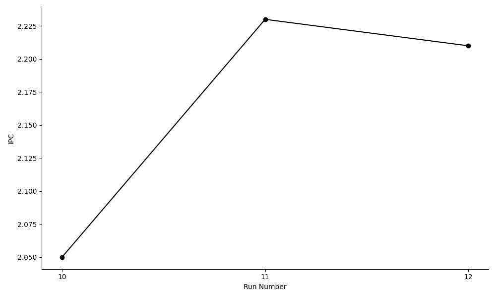
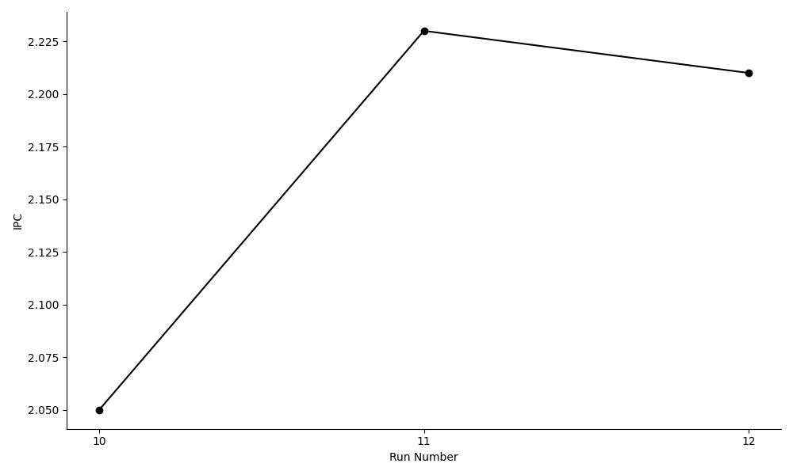

Speeding Up a Parquet Shredding Pipeline by ~8x
Lately, I've been poking around record shredding and needed a dataset of nested data structures for tracing query execution of shredded data. For this, I implemented a data generator which follows a Zipfian-like distribution. The generated data is staged in-memory as Arrow RecordBatches, and then written to disk as Parquet files.
The baseline version I wrote is a simple pipeline using Rust MPSC which connects multiple data generation (producer) threads to a single Parquet writer (consumer) thread. For a nested dataset of 10 million rows, it ~3.7s to complete. In this post, we'll see how a sequence of performance optimizations, reduced the total runtime to ~440ms (8x speedup).

hyperfine. The black line indicates the median runtime in seconds, while the shaded area indicates the range between min and max runtime.
This chart displays only improvements in total runtime, which does not tell the whole story. While some optimizations here show no difference in the total runtime, the improvements came from higher IPC (instructions per cycle), fewer cache misses and fewer branch mispredictions.
A string interning optimization (no. 9) looked like a guaranteed win. It was introduced to eliminate a lot of small string allocations in the data generation (producer) threads. The performance got worse (more on this later in this post) and the change had to be reverted. This strongly reinforces, the importance of measurements and profiling data for knowing unambiguously if a code optimization made an improvement or did the opposite.
All benchmarks were run on a Linux machine with the following configuration:
- Ubuntu 24.04.2 LTS (Kernel 6.8)
- AMD Ryzen 7 PRO 8700GE (8 Cores, 16 Threads)
- 64 GB of DDR5-5600 ECC RAM
- 512 GB NVMe SSDs.
Background
The program is a CLI tool for generating a target number of rows of nested data structures and then written to disk in Parquet format.
Nested data structures do not naturally fit into a flat columnar format. Record shredding is a process which converts the nested data into a flat, columnar format while preserving the original structural hierarchy of the raw data.
The generated data follows a Zipfian-like distribution. It is staged in memory as Arrow RecordBatches, before being written to disk as Parquet files.
The data is generated in parallel using a Rayon thread pool. Then data generator threads (producers) sends the data to a Parquet writer thread (consumer). The number of writers are configurable from the CLI.
Phase 1: Getting Started
First, we build the CLI program in release mode and use that for end to end benchmarking using hyperfine.
In Cargo.toml the following section is added for release builds:
[profile.release]
debug = "line-tables-only"
strip = falseThis will include just enough debug information in the release binary which will help us trace hotspots back to the exact line of code in Rust. This is necessary when recording the call-graphs of the program's execution using perf.
When generating flamegraphs, we will use rustfilt to demangle the symbols for improved readability.
We will also collect hardware performance counters like - cycles, instructions retired, cache references, cache misses, branch instructions and branch mispredictions.
The following optimizations from 01 through 04, uses the flamegraph to identify hotspots indicated by tall towers and then attempt to squash it.
01: Use a Dictionary Data Type
In the baseline version, the PhoneType Rust enum is mapped to a string data type (DataType::Utf8) in the Arrow schema.
pub enum PhoneType {
Mobile,
Home,
Work,
}Instead, by changing the Arrow field data type to DataType::Dictionary, the expectation is that the total memory footprint of the program, and storage size of the Parquet file will improve.
pub fn get_contact_phone_fields() -> Vec<Arc<Field>> {
vec![
Arc::from(Field::new("number", DataType::Utf8, true)),
- Arc::from(Field::new("phone_type", DataType::Utf8, true)),
+ Arc::from(Field::new(
+ "phone_type",
+ DataType::Dictionary(Box::new(DataType::UInt8), Box::new(DataType::Utf8)),
+ true,
+ )),
]
}After the change, the maximum RSS (resident set size) is reduced by ~1MB in a run for generating 10 million rows. The Parquet storage size improvement is negligible. There is a minor regression in runtime.
Even though, there are no dramatic gains here like we expected, we will maintain this change because it removes the mismatch between the underlying Rust and Arrow data types. That is definitely a readability improvement.
02: Eliminate Intermediate Vector Allocation
The generate data with a predefined data skew (Zipfian-like), a data template value is first generated. The holes in the templates are filled in to generate the final Contact struct value, which is then converted to an Arrow RecordBatch. The series of value transformations looks like this:
Vec<PartialContact> → Vec<Contact> → RecordBatch.
Instead of creating the intermediate Vec<Contact>, we can do a late materialization of the final Contact value when building a RecordBatch by directly passing it the instructions within Vec<PartialContact>. After eliminating the intermediate step, the value transformation will look like this:
Vec<PartialContact> → RecordBatch.
- // Assemble the Vec<Contact> for this small chunk
- let contacts_chunk: Vec<Contact> = partial_contacts
- .into_iter()
- .map(|partial_contact| { ... })
- .collect();
-
- // Convert the chunk to a RecordBatch and send it to the writer
- let record_batch = create_record_batch(parquet_schema.clone(), &contacts_chunk)
- .expect("Failed to create RecordBatch");
+ let record_batch =
+ to_record_batch(
parquet_schema.clone(), &phone_id_counter, partial_contacts)
+ .expect("Failed to create RecordBatch");
+After the change, there is no noticeable change in total runtime. On the other hand, there is a noticeable improvement across the board in CPU utilization metrics. Even though the pipeline did not execute any faster, it ran more efficiently.
03: Preallocate a String Buffer
In the hot loop, where a RecordBatch is being created, a string is allocated in the heap for each generated value. For a run of 10 million rows this is the equivalent of 10 million heap allocations.
We can eliminate 99% of these allocations by reusing a mutable string buffer within the loop where PartialContact template values are being materialized and appended into the RecordBatch.
Suppose a RecordBatch is created from a chunk of 1K row values, it now requires only 10K heap allocations.
+ let mut phone_number_buf = String::with_capacity(16);
+
for PartialContact(name, phones) in chunk {
name_builder.append_option(name);
@@ -155,11 +158,13 @@ fn to_record_batch(
if has_phone_number {
let id = phone_id_counter.fetch_add(1, Ordering::Relaxed);
- let phone_number = Some(format!("+91-99-{id:08}"));
+ write!(phone_number_buf, "+91-99-{id:08}")?;
struct_builder
.field_builder::<StringBuilder>(PHONE_NUMBER_FIELD_INDEX)
.unwrap()
- .append_option(phone_number);
+ .append_value(&phone_number_buf);
+
+ phone_number_buf.clear();After this change, there is again no noticeable change in the total runtime. But similar to earlier change, all measures point to an overall improvement in the CPU efficiency of the program.
04: Preallocate a String Buffer 2
This is a follow up optimization from the previous one. The idea is the same, to eliminate 99% of heap allocations when generating data, by preallocating a mutable string buffer, and reusing it.
fn name_strategy() -> BoxedStrategy<Option<String>> {
prop_oneof![
- 80 => Just(()).prop_map(|_| Some(format!("{} {}", FirstName().fake::<String>(), LastName().fake::<String>()))),
+ 80 => Just(()).prop_map(|_| {
+ let mut name_buf = String::with_capacity(32);
+ write!(&mut name_buf, "{} {}", FirstName().fake::<&str>(), LastName().fake::<&str>()).unwrap();
+ Some(name_buf)
+ }),
20 => Just(None)
].boxed()
}
The results are identical to the previous optimization. No change in the total runtime. But there is considerable improvement in the CPU efficiency of the program.
Why is the Runtime Unchanged?
The optimizations so far had little to no effect on the total runtime of the program, which has remained stable.

The flamegraph profiles taken after each optimization also display a similar consistency.
We have not seen a speedup in the underlying program despite the optimizations is related to Amdhal's law. The pipeline execution spent only a small fraction of its total execution time in the hot loops which were optimized. This is characterized by tall but narrow towers in the flamegraph profile. To achieve a runtime speedup, we have to focus on the widest towers, as they indicate where the most amount of time is spend.

The CPU efficiency has improved across most metrics from the baseline version because of eliminating allocations.
The same program now executes in less CPU cycles, requires less instructions. Reducing heap allocations is particularly noticeable as reduced cache-references, cache-misses, branch-instructions and branch-misses.
Even though the runtime has not changed, the user time metric shows that we have shaved off ~2s (from 28s to under 26s) with these optimizations.

The individual performance counter metrics have improved, but the IPC (instructions per cycle) has gone down from 1.20 to 1.18. Even so, we are now executing the workload using less CPU instructions and cycles. That counts as an efficiency improvement.

Phase 2: Architectural Changes


Phase 3: A Performance Regression


Phase 4: Micro-optimizations


 
